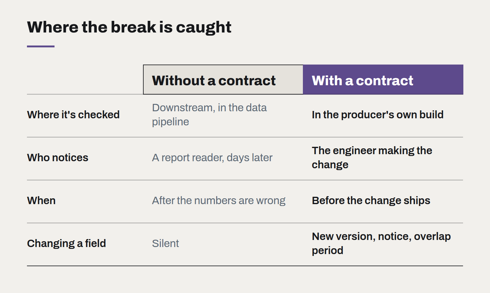

Data contracts: stop fixing pipelines downstream
Most broken dashboards were broken upstream, by a change nobody announced. A data contract makes the producer of the data responsible for its shape — and makes the break loud instead of silent.

Every data team knows the Monday morning message: the revenue dashboard is wrong. Someone traces it back through the pipeline and finds that, on Friday, an application team renamed a field, changed a status value from closed to complete, or started sending amounts in cents instead of dollars. Nothing errored. The data kept flowing. It was just wrong.
This is the most common failure in business data, and it is almost never a failure of the data team. It is a failure of agreement. The people who produce the data changed it without knowing who depended on it, and the people who consume it had no way to find out until the numbers looked odd.
What a data contract is
A data contract is an explicit, versioned agreement about the shape and meaning of a dataset that one system provides to others. It typically covers:
- Schema. The fields, their types and which are required.
- Semantics. What each field means, in words. What values a status can take. Whether an amount includes GST. Which timezone a timestamp is in.
- Quality rules. Checks the data must pass: no nulls in the customer ID, totals that sum correctly, dates that are not in the future.
- Freshness. How often the data arrives and how late is too late.
- Ownership. The team responsible for the dataset, and how to reach them.
The contract lives in version control alongside the producing system's code. It is not a document in a wiki; it is something the build checks.

Moving the check upstream
The important shift is where the check happens. Without contracts, validation lives in the data pipeline, far downstream, and fails after the damage is done — if it fails at all. With contracts, the producing team's own build verifies that what they are about to ship still matches the contract. A breaking change fails their pull request, not someone else's dashboard.
That does not mean the producer can never change the data. It means changes are deliberate. Adding a field is fine. Renaming or removing one requires a new version of the contract, a notice to consumers, and a period in which both versions are available.
Where to start
Contracts do not need to cover everything at once. The approach that works:
- Pick the three or four datasets that feed the reports the leadership team actually reads.
- Write the contract for each with the producing team in the room. The conversation about what a field means is often the most valuable part — it regularly uncovers two teams using the same word differently.
- Add automated checks on the producer's side, then on the consumer's side as a second line.
- Extend to other datasets when a break happens, not before.
What it changes
The immediate benefit is fewer broken reports. The larger one is trust. When leaders know that the numbers in front of them come from datasets with named owners and enforced definitions, they stop asking for the spreadsheet version "just to check". That is when data starts to change decisions rather than just decorate them.
Metrics before models
Why the first automation project should be the one nobody wants to demo, and how to sequence the rest behind it.
What changes when software is cheap to write
AI coding tools have made producing code dramatically faster. They have not made deciding what to build, checking that it works or running it for years any cheaper — and that shifts where the value is.
Choosing a frontend framework is mostly choosing a team
The technical differences between mainstream frameworks have narrowed. What still differs is who you can hire, how long the code will be supported, and how much of it you actually need.